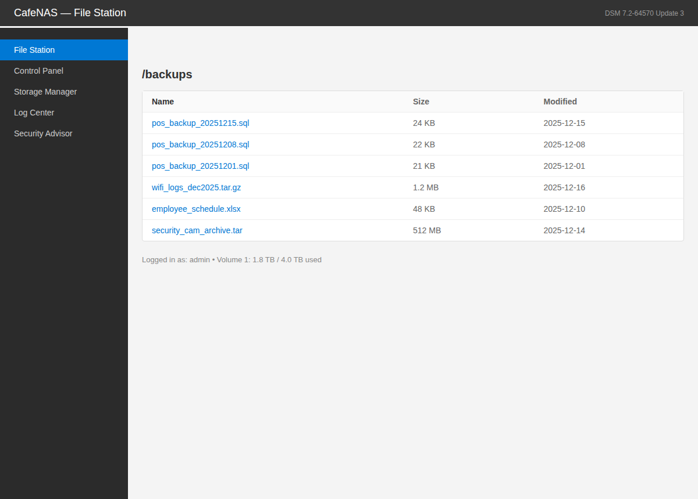
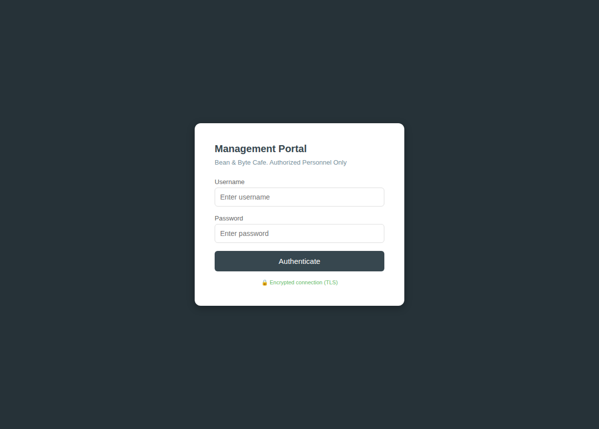
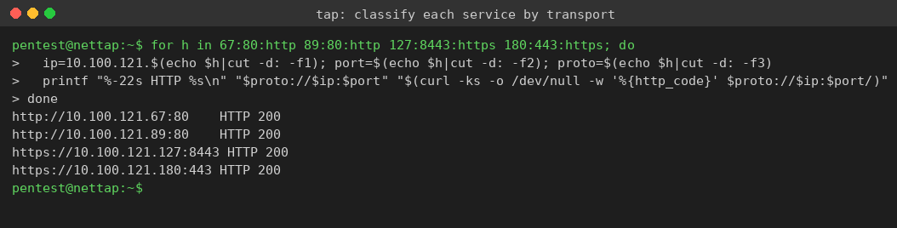
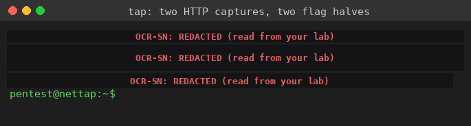
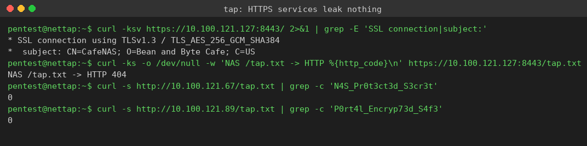

Exercise 12B: What's Protected, What's Not?
Engagement Status
Client: Bean & Byte Cafe Role: Security Auditor Phase: Reconnaissance Service Enumeration Exploitation ARP Encryption in Transit
What you know so far:
- You have observed the difference between HTTP and HTTPS traffic firsthand.
- You know how to read a destination-side capture from the network tap.
- The cafe has expanded: several services now run, some on HTTP and some on HTTPS.
- A login simulator sends credentials to each of them on a loop.
Your task: Survey the expanded cafe network on your own, classify every service as protected (HTTPS) or unprotected (HTTP), and recover the flag that the unprotected services leak. The flag is split into two halves, one in each HTTP service capture.
Objective
Work the network independently. Classify four services by transport security, read the cleartext POST bodies that the two HTTP services expose, and assemble the flag from the two tokens. Confirm that the two HTTPS services protect their credentials so nothing readable reaches the wire. Produce a short service security report for the cafe owner.
Difficulty: Beginner Estimated time: 30 minutes
The Setup
The previous exercise walked you through a single HTTP service against a single HTTPS service. Here the cafe runs four services at once, and the flag is deliberately split so you have to find and read more than one capture.
Two of the four services answer on plain HTTP. Each one runs a destination-side packet capture on its own interface and serves that capture over a small read endpoint, the same model you used on the POS terminal. The other two answer on HTTPS, so their traffic is TLS ciphertext and there is nothing readable to publish.
Your job is to decide which is which by evidence, not by assumption, and to lift the flag from the services that fail to protect it.
Network Layout
| Device | Hostname | IP Offset | Port | Capture endpoint |
|---|---|---|---|---|
| Security Camera DVR | cafe-dvr | .67 | 80 | /tap |
| Menu Display | cafe-menu | .89 | 80 | /tap |
| NAS Backup | cafe-nas | .127 | 8443 | none (HTTPS) |
| Secure Portal | cafe-secure-portal | .180 | 443 | none (HTTPS) |
| Login Simulator | cafe-login-sim | .190 | none | client |
| Network Tap | nettap | .250 | 22 | SSH |
The placeholders <SUBNET> and the per-host addresses stand in for values from your lab page. If your subnet base is 10.100.121, then the DVR is 10.100.121.67, the menu display is 10.100.121.89, the NAS is 10.100.121.127, and the portal is 10.100.121.180. The transcripts below use those exact addresses.
Browse the Four Services First
Before you classify anything from a capture, open all four services in a browser and let the address bar tell you the first part of the story. Two of them load over http:// with no padlock; two of them load over https:// and present a TLS connection. Substitute your own subnet base for each placeholder.
Open the two plain-HTTP services
From a browser on your Kali machine, open the DVR console and the menu display. Both answer on plain HTTP, port 80.
The DVR serves an admin login console (admin username pre-filled), and the menu display serves the public cafe menu board. Neither shows a padlock, because neither uses TLS. The login the DVR accepts crosses the wire in the clear, which is exactly why a capture of its traffic will hand you a credential.


Open the two HTTPS services
Now open the NAS File Station and the management portal over HTTPS. The NAS answers on port 8443, the portal on 443. Both use self-signed certificates, so accept the browser certificate warning the first time.
The NAS File Station lists the cafe backup files, and the portal presents a login that states Encrypted connection (TLS) with a padlock. Both run real TLS underneath, so their traffic on the wire is ciphertext rather than readable text.


You have now seen the split with your own eyes: two http:// services on the left exposing their pages in the open, two https:// services on the right wrapped in TLS. The rest of this exercise proves it from the captures, recovers the flag the two HTTP services leak, and confirms the two HTTPS services leak nothing.
Walkthrough
Step 0: SSH into the Network Tap
Start "Bean & Byte Cafe: What's Protected?" from the Coffee Shop labs and wait for Running. Note the subnet on the lab page. All capture reading happens from the tap, an on-subnet jump box, because you must sit on the same broadcast domain as the cafe traffic.
Connect to the tap over SSH
From your Kali machine, SSH into the tap at offset .250. The password is Security1#. Replace the address with your subnet if it differs.
The prompt becomes pentest@nettap. Everything below runs from the tap.
Step 1: Classify Each Service by Transport
Before reading any captures, decide which services are HTTP and which are HTTPS. A plain HTTP service answers an http:// request; an HTTPS service answers https:// and negotiates a TLS connection. Probe all four and note which scheme each one accepts.
Probe every service and record its transport
The -k flag accepts the self-signed certificates on the HTTPS hosts. A 200 against http:// means the service is unprotected; a 200 against https:// means it speaks TLS.
curl -ks -o /dev/null -w 'http://<DVR_IP>:80 -> %{http_code}\n' http://<DVR_IP>:80/
curl -ks -o /dev/null -w 'http://<MENU_IP>:80 -> %{http_code}\n' http://<MENU_IP>:80/
curl -ks -o /dev/null -w 'https://<NAS_IP>:8443 -> %{http_code}\n' https://<NAS_IP>:8443/
curl -ks -o /dev/null -w 'https://<PORTAL_IP>:443 -> %{http_code}\n' https://<PORTAL_IP>:443/

The DVR and the menu display answer over plain HTTP. The NAS and the secure portal answer over HTTPS. The two HTTP services are the ones that will leak.
Step 2: Read the Two HTTP Captures and Recover Both Flag Halves
Each HTTP service publishes its running capture at /tap. The login simulator sends a credentialed POST to each one on its cycle, so both captures contain a plaintext login. Read both and pull the line carrying the OCR-SN: marker.
Pull the cleartext tokens from both HTTP services
Read each capture and grep for the credential marker. The DVR carries the first half of the flag; the menu display carries the second.

Read both bodies:
username=admin&password=OCR-SN:<TOKEN>&session=cam_review_01
username=manager&password=OCR-SN:<TOKEN>&content=daily_specials
Strip the OCR-SN: prefix from each password to read the token. The first token is the DVR password value after its prefix; the second token is the menu display password value after its prefix. Both crossed the wire as plain text, captured at the destination with no cracking required.
Step 3: Confirm the HTTPS Services Protect Their Credentials
The NAS and the secure portal carry their own logins, but over TLS. Verify that each negotiates a real TLS connection, that neither offers a plaintext capture endpoint, and that neither HTTPS password ever appears in the HTTP captures you just read.
Prove the HTTPS services leak nothing
The verbose probe prints the negotiated TLS version and certificate subject. The /tap probe shows there is no capture feed to read. The two grep counts show the HTTPS passwords are absent from the HTTP captures.

Read the results together:
- The NAS negotiates TLSv1.3 with an AES-256-GCM cipher and presents a certificate for
CafeNAS. The secure portal does the same undercafe-secure-portal. The traffic to both is genuine TLS ciphertext. - The NAS has no
/tapfeed and returns HTTP 404. There is no plaintext capture, because there is no plaintext to capture. - The NAS password
N4S_Pr0t3ct3d_S3cr3tand the portal passwordP0rt4l_Encryp73d_S4f3each appear 0 times in the HTTP captures. The same simulator sends those logins every cycle, yet neither one ever surfaces in readable form.
Step 4: Write the Service Security Report
You now have everything for the cafe owner report. Classify each service and flag the unprotected ones for remediation.
| Service | Transport | Status | Exposure |
|---|---|---|---|
| Security Camera DVR | HTTP | Unprotected | Credentials and token in clear |
| Menu Display | HTTP | Unprotected | Credentials and token in clear |
| NAS Backup | HTTPS | Protected | TLS 1.3, nothing readable on wire |
| Secure Portal | HTTPS | Protected | TLS 1.3, nothing readable on wire |
The recommendation writes itself: move the DVR and the menu display to HTTPS, because right now both hand their admin credentials to anyone who can read their traffic.
Step 5: Submit the Flag
Assemble the flag from both halves
The first token comes from the DVR password; the second fragment comes from the menu display password. Joined with an underscore they spell out the lesson: HTTP needs TLS.
Combine the two halves inside the OCR{} wrapper and submit it:
Join the two halves you captured with an underscore, wrap the result in OCR{}, and submit it on the lab page.
Why This Matters
The cafe did not run a single insecure service by accident; it ran several, side by side with secure ones, and could not tell them apart. That is the real situation an auditor walks into. Some services were moved to HTTPS, the NAS and the portal, and they held the line: TLS 1.3 turned each login into ciphertext, and nothing readable reached the wire. The DVR and the menu display were left on plain HTTP, and both leaked their admin credentials and a flag token to any host that could read their traffic.
The split flag drives the point home. One insecure service is enough to lose a secret, and the cafe had two. An audit that stops at the first finding misses the rest, so the discipline is to classify every service by evidence and treat each plain-HTTP service that accepts sensitive input as already breached.
The remediation is the same as last time and just as simple to state: HTTP needs TLS. Every service handling a credential, a session, or any private value belongs on HTTPS, and the ones that are not belong at the top of the fix list.
Key Takeaways
- Classify services by evidence: probe each one and confirm whether it answers over HTTP or HTTPS before drawing conclusions.
- A single plain-HTTP service is enough to leak a credential; an expanded network multiplies the exposure.
- HTTP captures hand over the full login at the destination with no cracking; HTTPS captures yield only ciphertext and a 404 where a plaintext feed would be.
- A self-signed certificate still provides real TLS encryption on the wire; the
-kflag only bypasses trust validation, not the encryption itself. - The fix for an exposed HTTP service is TLS, not a stronger password.